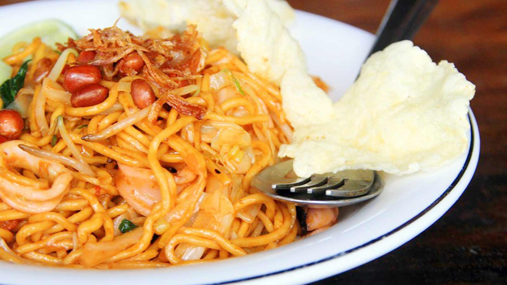
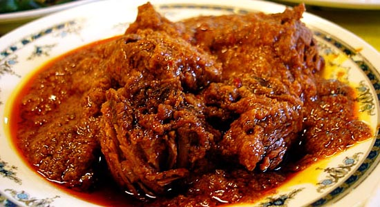
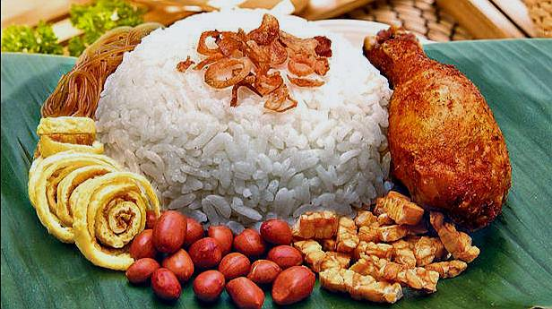
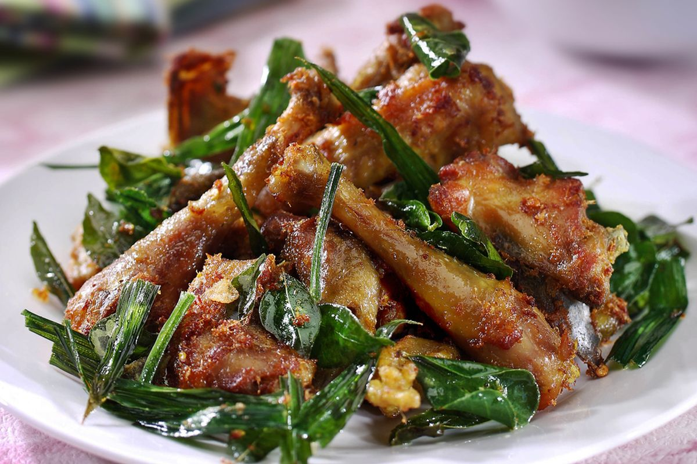

Cita rasa rempah yang kuat, kaya akan budaya dan tradisi dari Tanah Rencong.
Jelajahi Makanan
Beragam hidangan lezat yang menggugah selera dan wajib kamu coba.
Mie kuning tebal dengan bumbu rempah khas Aceh. Tersedia dalam varian goreng atau kuah.
Lihat Selengkapnya
Daging dimasak dengan bumbu rempah yang meresap sempurna, pedas dan gurih khas Aceh.
Lihat Selengkapnya
Nasi gurih dimasak dengan santan dan rempah, biasanya disajikan dengan ikan dan sambal.
Lihat Selengkapnya
Ayam goreng dengan daun kari dan bumbu khas, harum dan sangat menggoda selera.
Lihat SelengkapnyaResep turun-temurun dengan bumbu rempah pilihan.
Menggunakan bahan segar dan rempah terbaik.
Setiap makanan membawa cerita dan tradisi Aceh.
Disajikan dengan penuh cinta untuk kepuasan Anda.